Créé avec ♥♥♥ en novembre 2015
F pour le fullscreen et S pour les speakernotes
Le terme PO a pour origine la méthode Scrum
Il est l'un des 3 rôles de l'équipe,
avec le Développeur et le Scrum Master
“The Product Owner is responsible for maximizing the value of the product and the work of the Development Team.
How this is done may vary widely across organizations, Scrum Teams, and individuals.”— Scrum Guide
Le Product Owner est une personne,
pas un comité.
Il est LE responsable du produit.
Il n'est pas Project Owner !
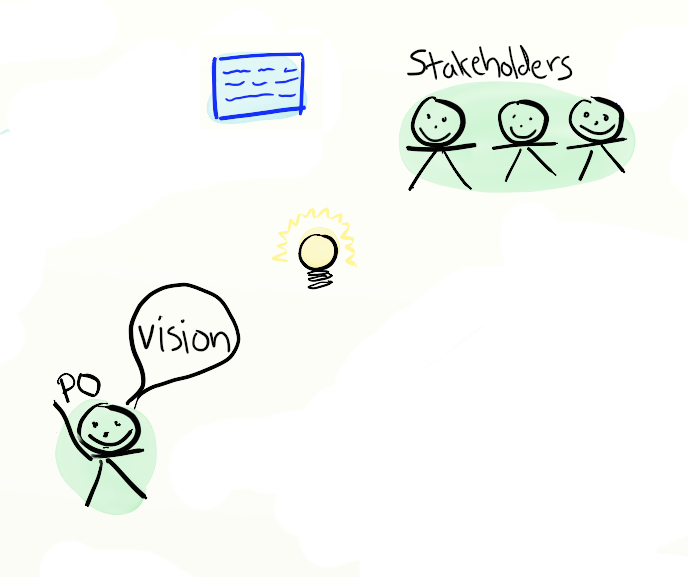
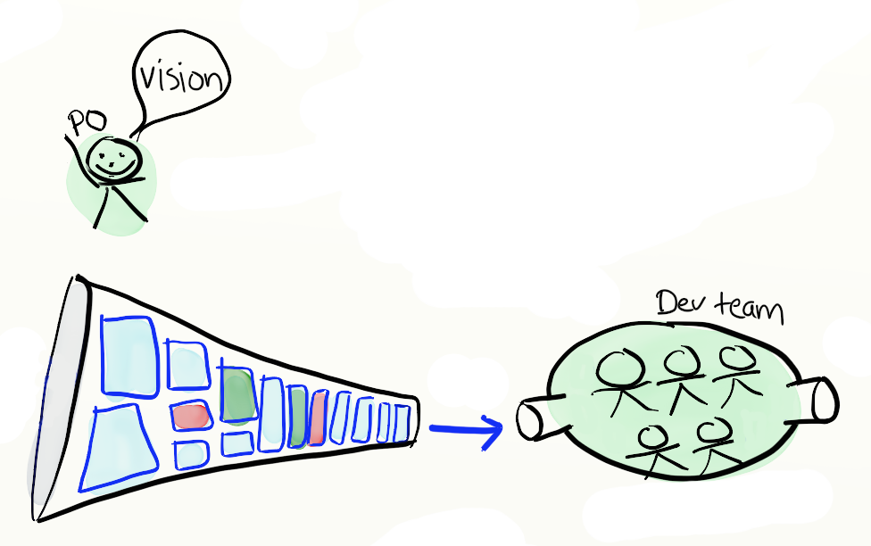
Le Scrum Master est votre allié,
c'est son rôle de vous aider.
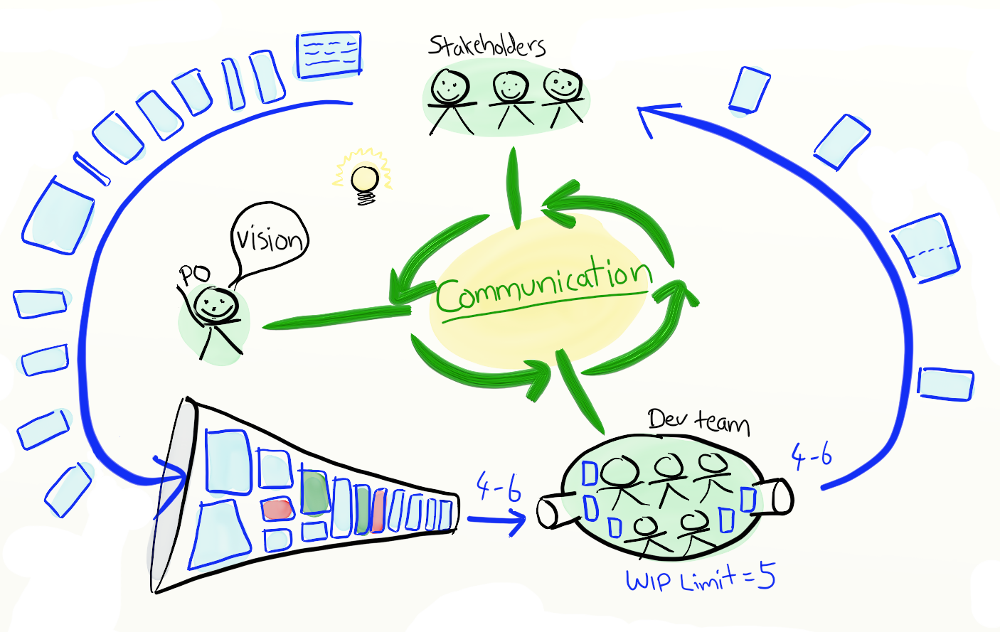
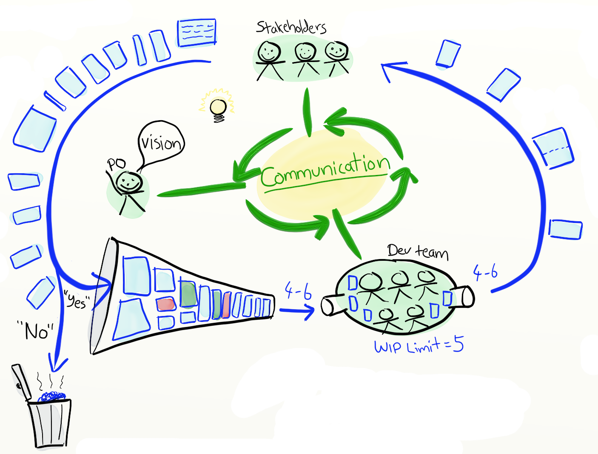
Une sensibilité à la technique lui permet :
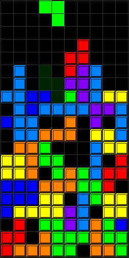
“What incredible benefits can we give to the customer?”
— Steve Jobs
We know why our work is important and
how we'll be successful
La vision doit être formalisée
Voici des outils pour la définir mais aussi pour la diffuser.
Le prix est un critère important pour les clients qui réservent des voyages en ligne. Les hôtels vous laissent déconnectés de la ville et de sa culture. Il n'y a pas de solution aisée pour réserver une chambre chez quelqu'un ou proposer une chambre.
AirBed&Breakfast est une plate-forme web où les utilisateurs peuvent louer leur logement pour héberger des voyageurs.
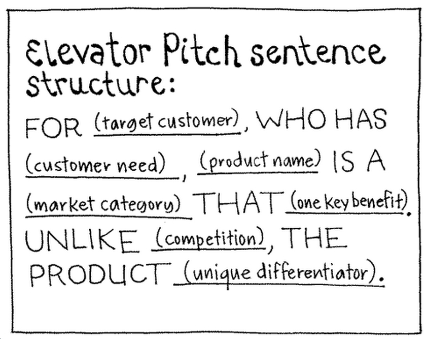
Se mettre à la place des utilisateurs
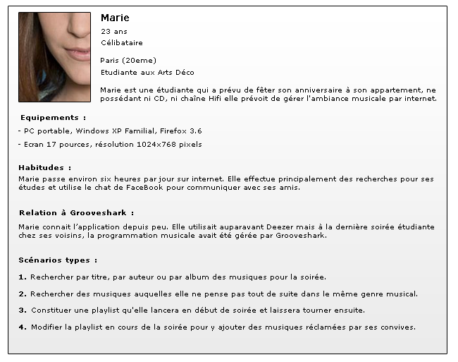
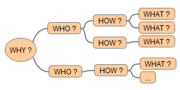
Exemples :
Exemples :
Exemples :
Exemples :
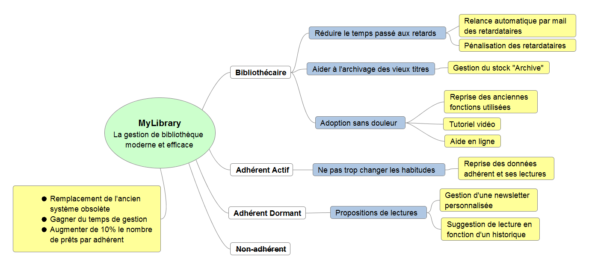
#1 Mettre en corrélation le quoi avec le pourquoi
#2 Créer des options
#3 Mener des expériences
Minimiser l'effort,
maximiser les résultats
A vous de jouer, vous avez 30 minutes.
Empathy Map
Carte Interview Problème
Business Model Canvas
Lean Canvas
Et n'oubliez pas la collaboration !
Construire une roadmap agile
Epic > Feature > User Story
Définitivement une convention.
Vision en 2D du product backlog
à faire au démarrage, puis à mettre à jour
Développé par Jeff Patton.
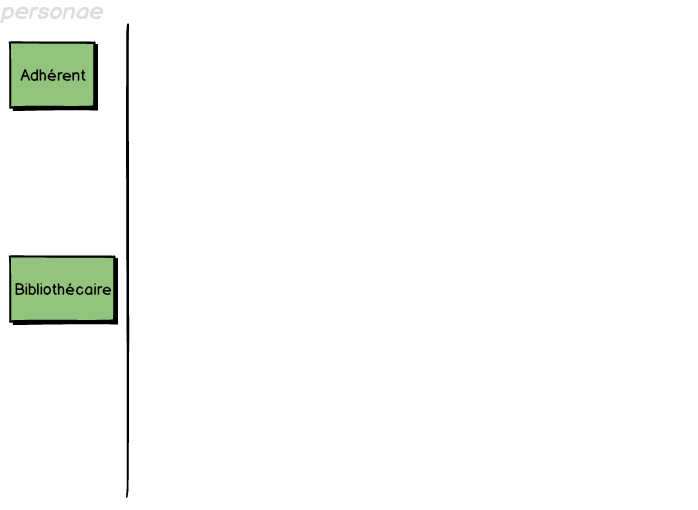
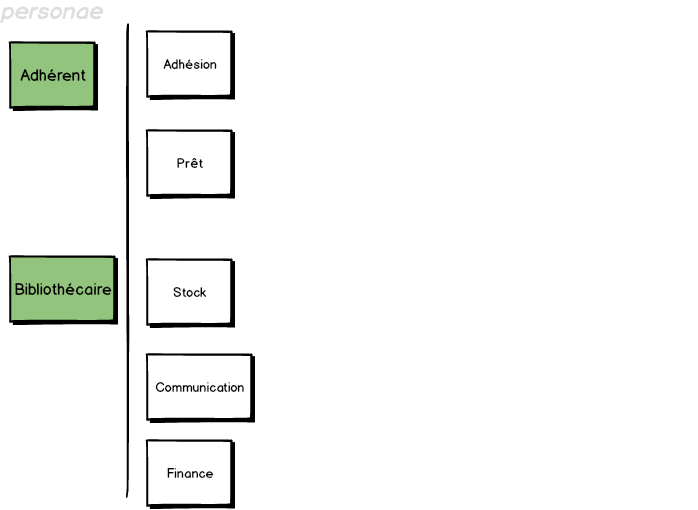
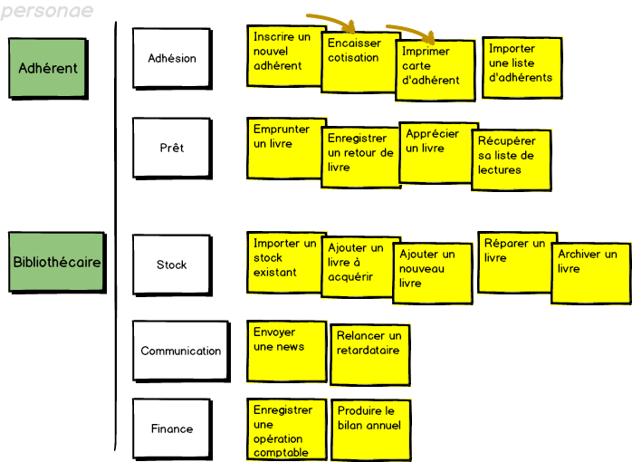
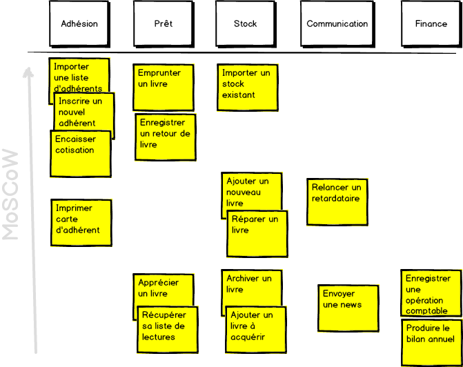
Must have
Should have
Could have
Won't have (but Would like in future)
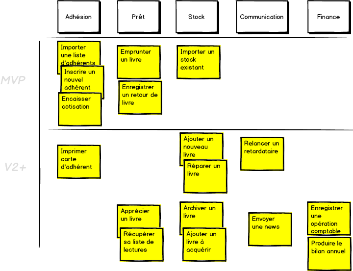
A vous de jouer, vous avez 30 minutes.
En tant que PO
Je veux créer des User Stories
Afin de communiquer efficacement avec mon équipe
Une User Story n'est pas un document. Le terme désigne l'ensemble des activités qui sont nécessaires
pour transformer une version V du produit en une version V+1 qui a plus de valeur; en ce sens une story
est un objectif.
Le niveau de détail d'une User Story n'est pas constant. Une story dont la réalisation est prévue dans plusieurs
semaines ne sera décrite que d'une brève phrase, alors qu'une story dont la réalisation est imminente
doit être cadrée par des tests de recette, des exemples, etc.
En tant que [rôle]
Je veux [fonctionnalité]
Afin de [bénéfice]
Oblige à se poser les questions : pour qui et pourquoi ?
Donner du sens !
En tant que futur adhérent
Je veux payer ma cotisation
Afin de pouvoir emprunter des livres
En tant que client
Je veux payer mon achat
Afin de l'acquérir
_______________________
Independent
Negotiable
Valuable
Estimable
Small
Testable
Ne dépend pas de la réalisation d'une autre story.
Peut être réalisée à n'importe quel moment.
Les bouchons sont vos amis.
Ce n'est pas un contrat explicite, les détails sont co-créés au cours du développement avec le client et le développeur. Une bonne story capture l'essentiel et laisse les détails.
Evitez de penser solution. Oubliez les termes techniques : bouton, menu, colonne de table.
C'est un incrément qui apporte de la valeur à mon client. Soyez attentif à ce point lorsque vous découpez.
Le découpage en couche n'a pas de valeur pour mon client. Exemple : "réaliser le schéma de la bdd pour la facturation"
Ceci implique que la story est suffisamment comprise, l'objectif est de pouvoir faire une estimation relative.
Si l'équipe a vraiment du mal à estimer, proposez un Spike.
Le développement d'une story ne doit pas dépasser quelques jours-hommes. Au dessus d'une semaine l'estimation est imprécise.
Idéalement, vous devez faire au minimum
5 ou 6 stories par sprint.
Je comprends assez ce que je demande
pour pouvoir écrire ce que je vais tester.
La story "augmenter la performance de la recherche"
ne va pas être facile à tester.
En tant qu'adhérent
Je veux emprunter un livre
Afin de le lire tranquillement chez moi
Notes
Le livre et la date d'emprunt sont mémorisés et associés à la fiche adhérent.
Le même livre ne peut plus être emprunté par un autre adhérent.
L'adhérent ne dépasse pas le nombre maximum d'emprunts possibles.
Si le livre n'est pas disponible, proposer de le réserver.
En tant qu'adhérent
Je veux visualiser ma fiche (avec mes emprunts)
Afin de vérifier ma situation (adhésion, nombre d'emprunts)
En tant qu'adhérent
Je veux emprunter un livre disponible
Afin de le lire tranquillement chez moi
A vous de jouer, vous avez 30 minutes.
Le contenu de l'itération
Ajouter un nouvel incrément au produit.
Sélectionnez les stories qui vont être réalisées dans la prochaine itération. Elles sont prioritaires et elles ont du sens. L'incrément du produit sera mis en production.
Le Sprint Planning est la réunion où les membres de l'équipe sélectionnent les stories. Pour cela, ils en discutent, ils les estiment, ils élaborent les solutions.
En sortie de réunion, l'équipe s'est engagée à réaliser les items du Sprint Backlog
L'estimation est réalisée à l'aide d'un planning poker.
Story point ou taille de T-shirt, peut importe.
C'est une estimation relative.
On utilise les données d'historique pour déterminer la capacité de réalisation de l'équipe.
On nomme vélocité la somme des estimations associées aux stories terminées lors de la précédente
itération.
La première fois, on est forcément dans le flou, mais avec l'expérience on s'améliore.
Un tiers de marge n'est pas exhorbitant.
Le TDD avec les mots du métier
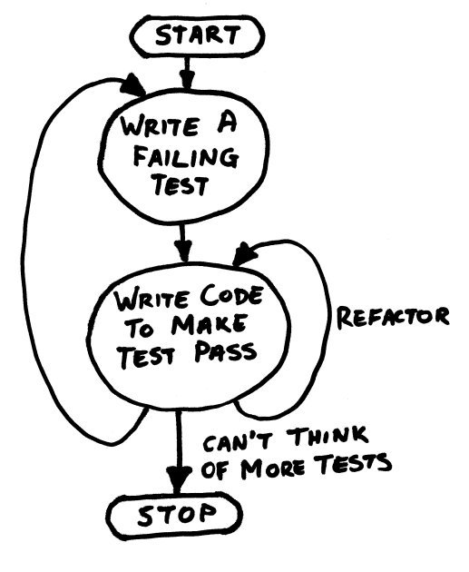
Scénario : [Intitulé du scénario]
On peut ajouter des conditions supplémentaires avec des Et.
En tant qu'adhérent
Je veux emprunter un livre disponible
Afin de le lire tranquillement chez moi
Scénario : Emprunt d'un premier livre
Scénario : Emprunt refusé pour défaut d'adhésion
Scénario : Emprunt refusé pour retard
Scénario : Validation des emprunts
|ISBN|Titre |Auteur |Disponible|Date retour |1234|L'étranger |A. Camus| vrai | |1244|Les misérables|V. Hugo | faux |2015-05-15
|Date |ISBN |Action |2015-05-01 |1234 |enregistre |2015-05-01 |1244 |refuse |2015-05-30 |1244 |enregistre
A vous de jouer, vous avez 30 minutes.
Fier de ce qu'on a fait
C'est la rétrospective du Produit
POULET en français, selon la définition de Pablo Pernot :
Performance Octroyée selon l'Utilité et la Légitimité du sujet En relation avec le Temps passé
- Cette présentation utilise reveal.js de Hakim El Hattab
- Illustration
du rôle du PO de Henrik Kniberg sur le Crisp's Blog
- Elevator Pitch sentence issue de 15Marches
- Caïn par Henri Vidal,
photo de Marie-Lan Nguyen
- Cycle du TDD emprunté à Grant McLean sur le site wellington.pm.org
{kind=link}